Text & Konzeption
Daylong
Die traditionsreiche Schweizer Sonnencreme-Marke Daylong hat es sich zum Ziel gesetzt, die Nummer 1 in der Schweiz zu werden. Daylong wollte das Wir-Gefühl stärken, damit sich möglichst jede:r Schweizer:in mit der Brand identifizieren kann. Also haben wir eine Headline-Mechanik entwickelt, die genau das erreicht.
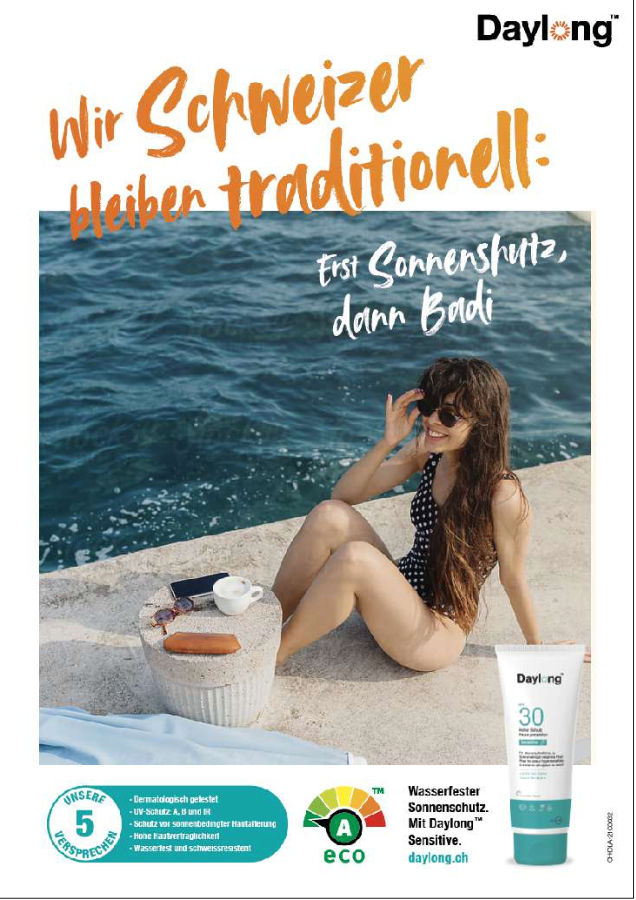
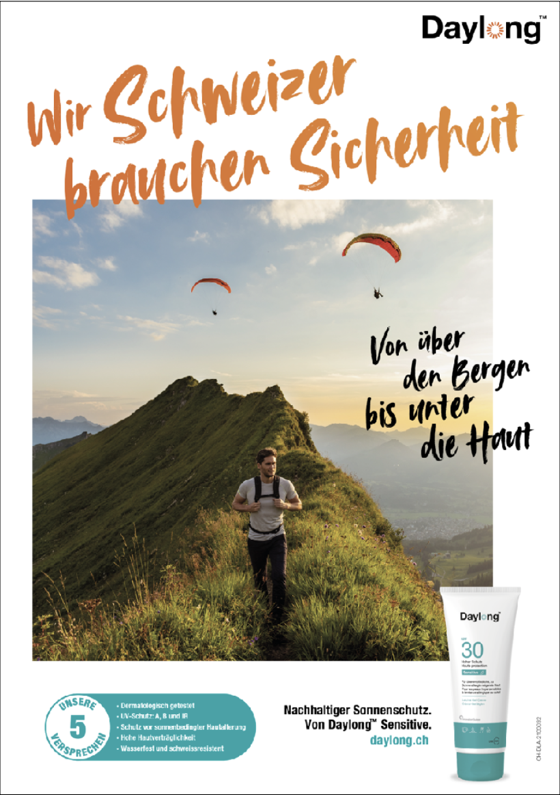
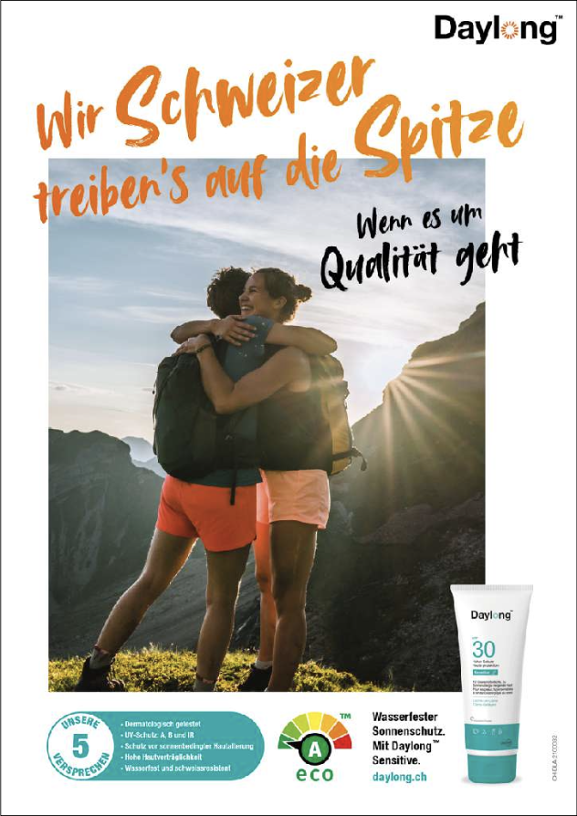
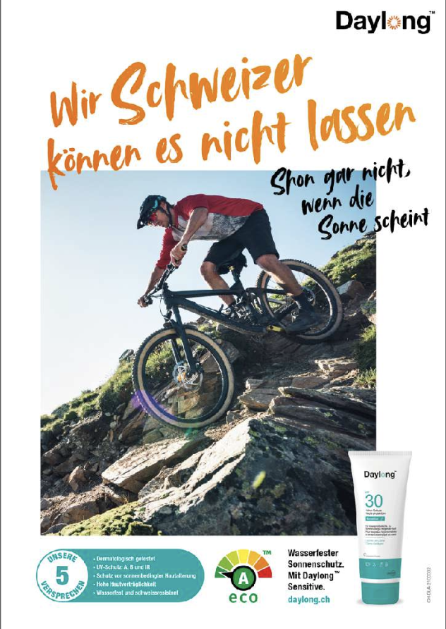
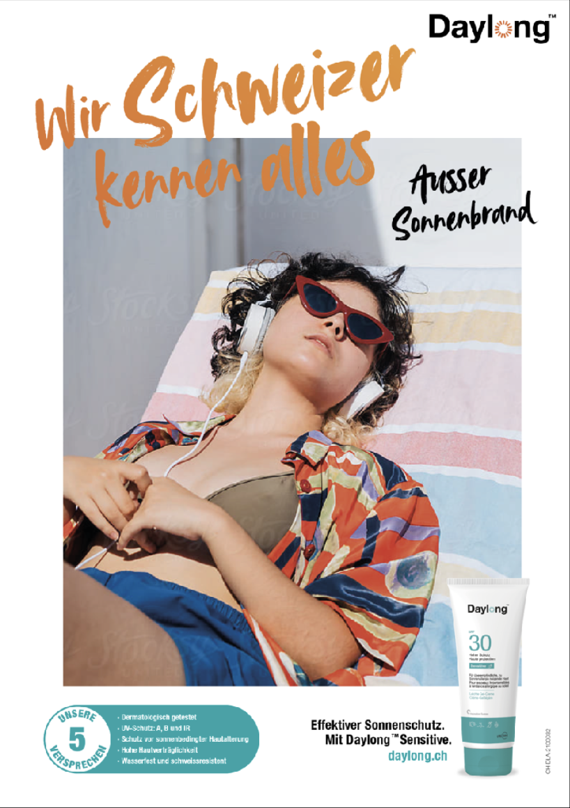
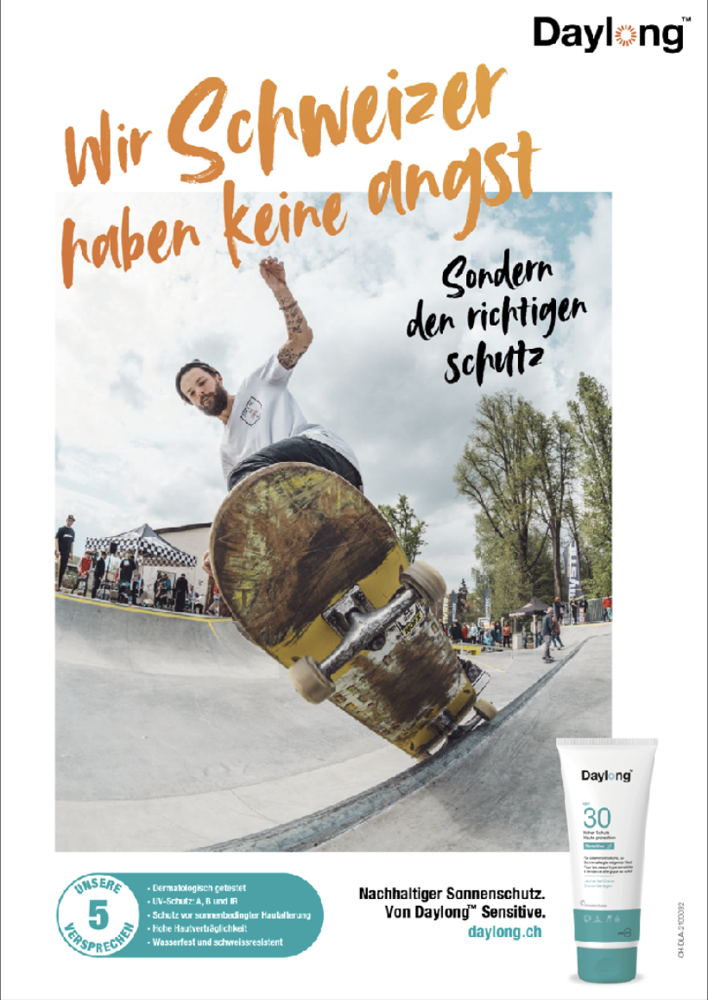
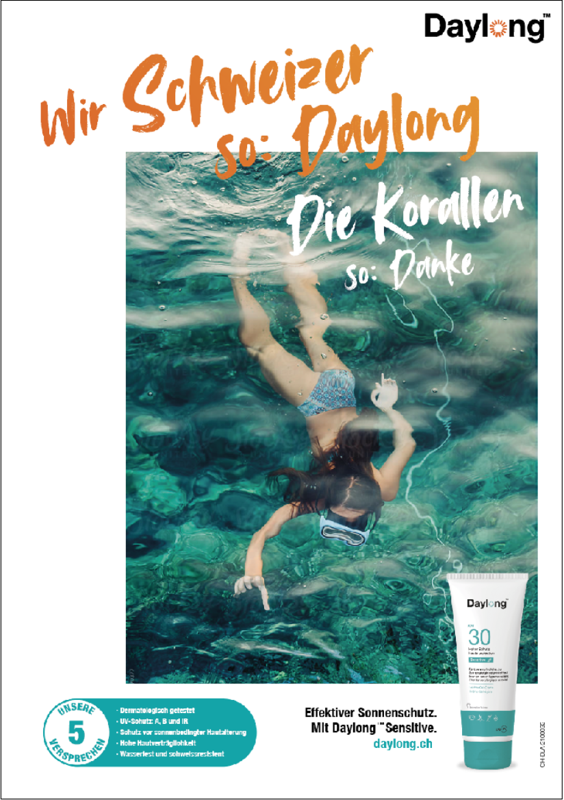
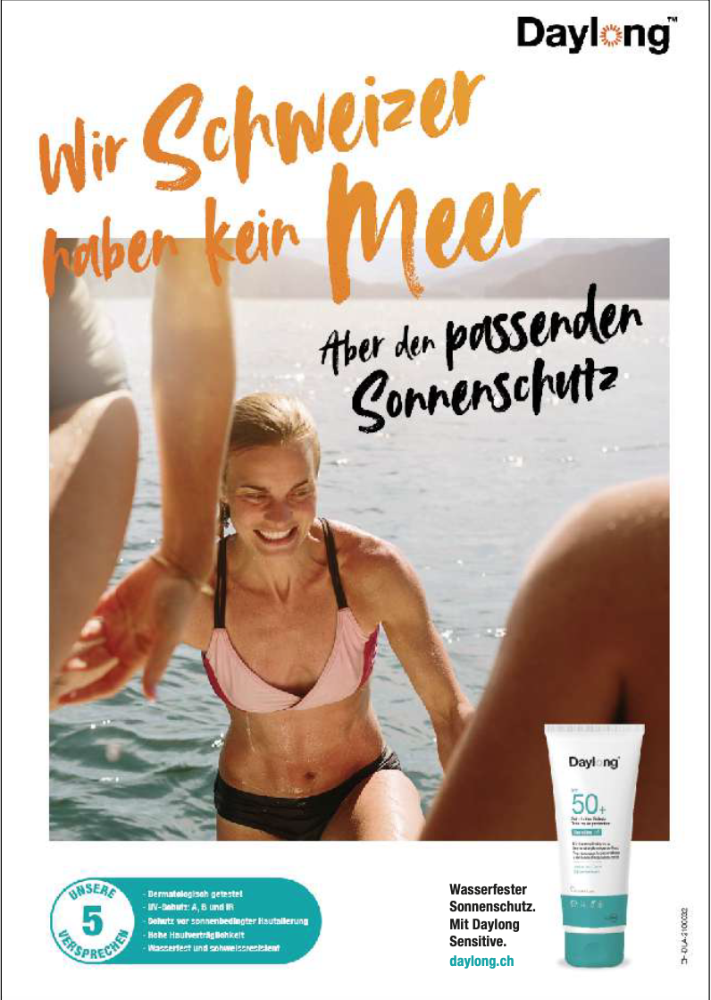
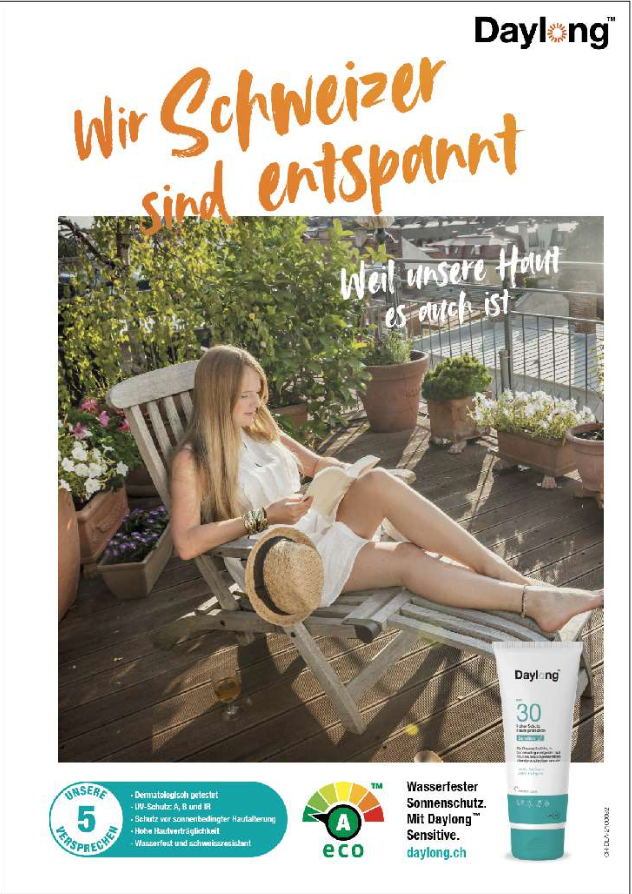
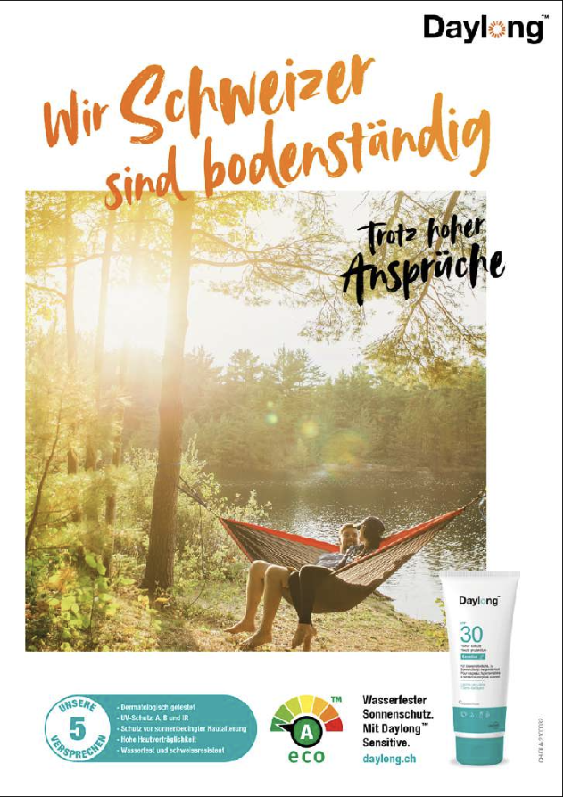
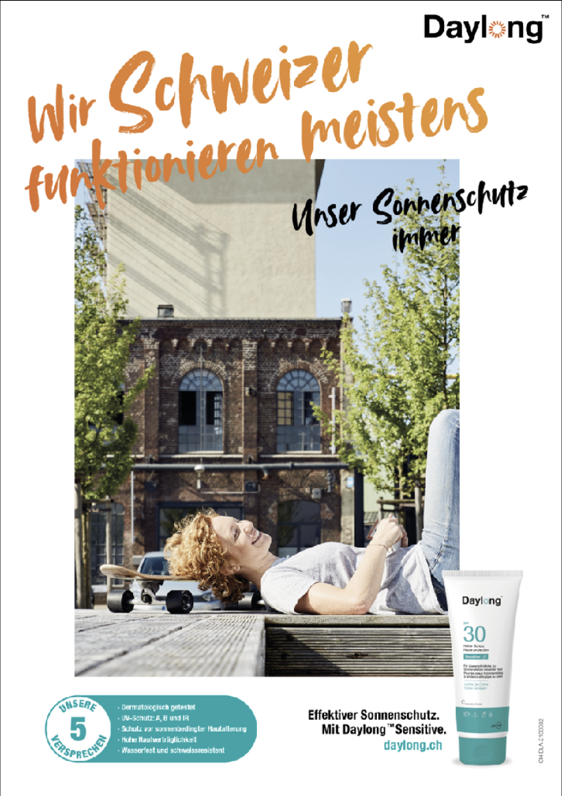
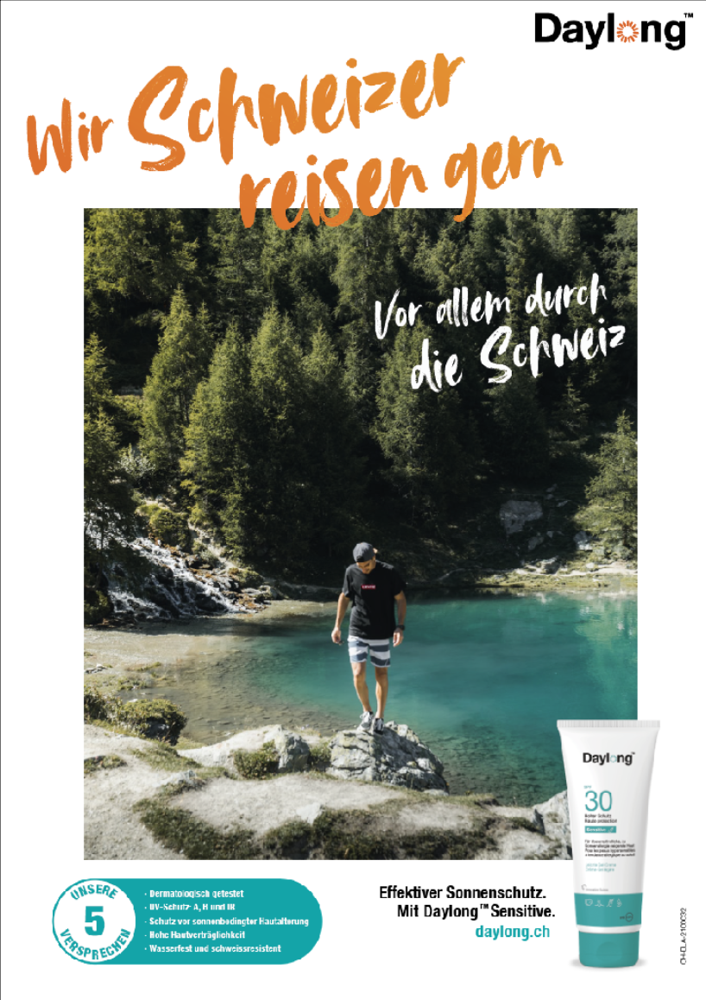
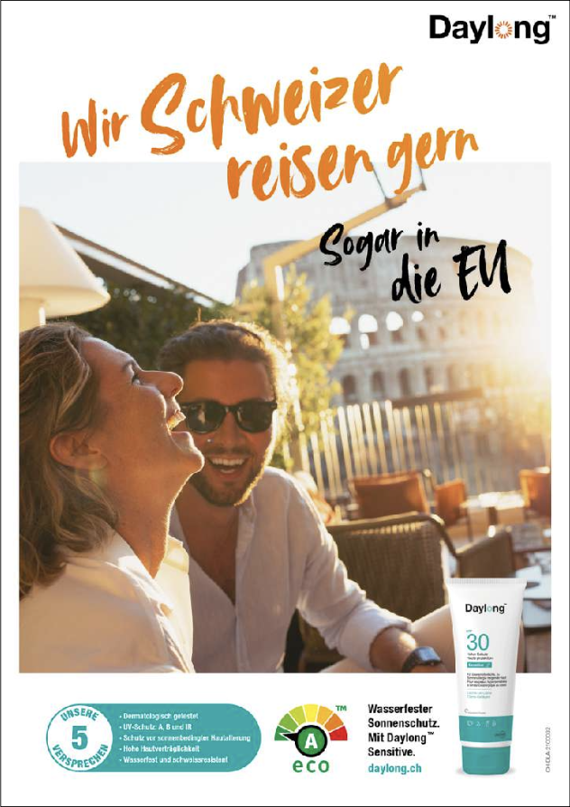
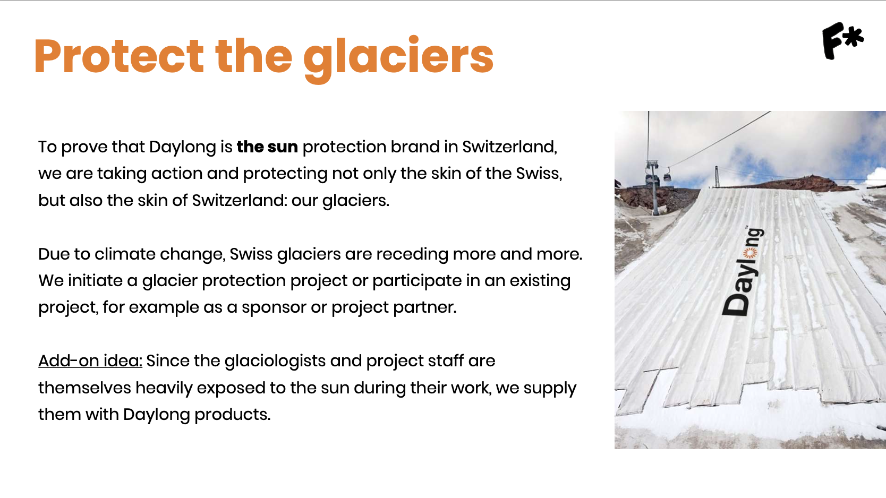